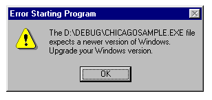
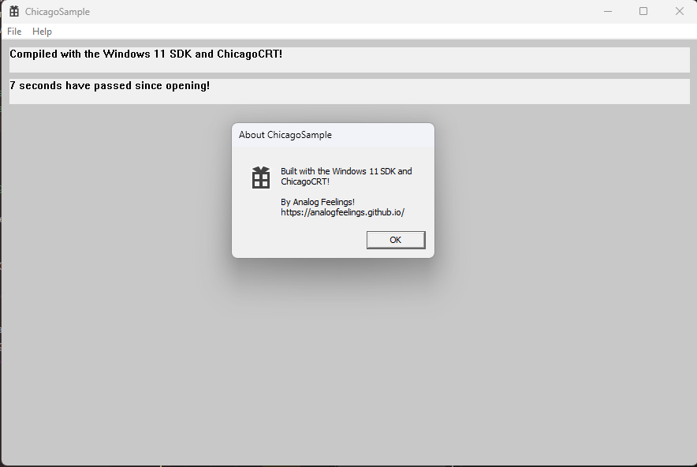

Using Modern Toolchains for Windows 95!
Posted on 2024-05-01 15:12 Edited on 2024-09-27 15:16
It's April 11th, 2024, and MattKC uploads a video about "backporting" .NET Framework 2.0 to Windows 95.
Well, sorta. It wasn't really a backport (since .NETFX is proprietary), but a "compatibility layer" backport.
Either way, it kind of inspired me to do something similar, but instead of with .NET, it would be with C/C++.
Thus, ChicagoCRT was born.
The "Chicago" in the name is there because Windows 95's codename during development was "Chicago", and "95CRT" wasn't a good name.
What Is ChicagoCRT?
ChicagoCRT is a fork of MiniCRT, which is a small MSVCRT replacement that doesn't rely
on modern windows APIs.
It had two major issues though:
- It referenced memset from the actual MSVCRT, which isn't available when you disable it.
- It didn't compile with /arch:IA32 on. This caused problems on older systems.
I decided to fork the project and fix these issues. Both were obviously kind of simple to fix.
But first, I decided to remove NMAKE and use a standard Visual Studio project for this, since NMAKE is old and hard to maintain.
Fixing Memset
This is the original memset implementation used in MiniCRT. As you can see, it tries to prevent the compiler from being "smart" and optimizing the code to a memset call from the MSVCRT.
Sadly, modern compilers are too good at optimizing and can still see through what this code is trying to do, so I had to come up
with a solution.
Aside from the solution, I also had to clean up the code since it was hard to guess from a first glance was it was doing.
MSVC has a feature where you can disable optimization at a function level by using the optimize pragma directive.
And sure enough, doing this causes MSVC to stop optimizing the function to a call to memset. This may also cause it to not use vectorization or
any other fancy optimizations, but since we are targeting systems that didn't even have MMX or SSE, it's fine.
I've also went ahead and replaced the confusing code with a pretty standard memset implementation, so now it's much more compact and easy to read.
Fixing the Architecture
This was the simplest to fix, as I just had to add one line in the .vcxproj file.
This could also be done in the Visual Studio GUI under C/C++ > Code Generation and the Enable Enhanced Instruction Set setting.
And now, I could finally test this on an actual Windows 95 setup. I don't have a real old computer, so I had to use 86box for it.
Beating MSVC Into Submission
As you can probably guess, modern MSVC does not output very Windows 95-friendly executables unless you really force it to.
For this, I've had to modify several project options on Visual Studio:
- Change the file extensions to .c instead of .cpp to avoid hidden allocations and more.
- Switch the character set to ANSI, as Windows 95 didn't have support for Unicode at all.
- Disable the standard library, as it references APIs Windows 95 lacks (this is where ChicagoCRT comes in).
- Disable SDL checks, as this may cause issues.
- Disable C++ exceptions, this is probably not needed if you're using C.
- Disable RTC, as this references functions from the MSVCRT.
- Disable security checks, as those add extra runtime overhead and may cause issues as well.
- As with ChicagoCRT, disable enhanced instruction sets.
- Disable randomized base address.
- Remove the x64 target and set x86 as the default.
As you can probably see, this is a very secure codebase (sarcasm), but it is now ready to be compiled and ran on Windows 95 corre-
Well, seems like I jinxed it.
Going Around MSVC's Bullshit
I was stuck here for like half an hour, I was thinking that maybe I configured something wrong.
Eventually, I grabbed a hex editor and took a look at the PE header. I noticed the minimum OS and subsystem versions were set to
6.0, which is Windows Vista.
Windows 95 uses OS version 1.0 and subsystem version 4.0, so I had to try to get MSVC to output these values.
MSVC does have a flag to set the minimum OS version, but it refuses to set anything lower than Windows Vista, so we will have to bruteforce it.
I came up with a C# script to run as a post-build event that patches the output executable with the correct values.
After Success
With this script, we finally got the executable to run on Windows 95!
By this moment, ChicagoCRT was still called MiniCRT since it wasn't public yet, by the way.
Although it's kind of boring, don't you think? It needs something more to be more impressive.
I decided to just port the Win32 sample project to the same system and add a bit of extra functionality. Thankfully, I didn't need to change anything
regarding the compiler, it just worked fine!
And since this is Windows, here it is running on my host Windows 11 system!

It's ugly since it lacks visual styles and reverts to the default legacy styles, but it works fine!
If you're wondering about the specs of the emulated Windows 95 machine, here they are:
- CPU: Intel Pentium 75MHz
- Motherboard: ASUS P/I-P55T2P4
- Memory: 8MB
- GPU (2D): S3 ViRGE/DX (375)
- GPU (3D): 3dfx Voodoo
- SPU: SoundBlaster 16
If you want to check out the source code for the sample app, you can find it here!